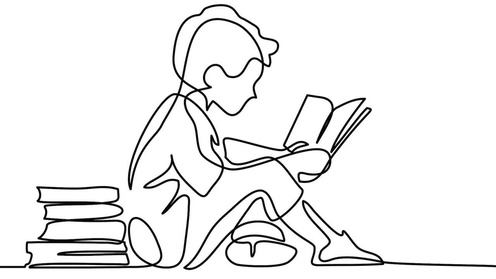

WELCOME TO MY SITE!
My name is Jacob Veber, I am a freelance web developer, mobile desiger, and all-around creative dedicated to bringing ideas to life.
“The World will be Saved by Beauty.”
-Fyodor Dostoevsky

ABOUT ME (THE SUMMARY)
I'm currently studying Computer Science as a Senior at UMass Lowell. Prior to college, I was a Programming and Web Development trade student at Bay Path RVTHS. With my background in computers, I hope to apply what I've learned to push the bounderies of technology.